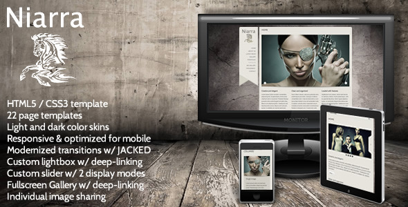

CodingJack's 3D Carousel
CSS3 3D Carousel with thumbnail grid fallback
- By: CodingJack
- codecanyon.net/user/CodingJack
Thank you for purchasing CodingJack's 3D Carousel. This documentation will help you customize the plugin. I highly recommended customizing the carousel before adding it to your web pages.
Have a Question? Search the item's discussion page:
Need this item customized? Contact CodingJack
Special Notes
1) The carousel won't work locally in Chrome (unless you have a local server). This is due to HTML5 Canvas drawing restrictions. But you can use Safari or Firefox for customizing the carousel locally and it will work in Chrome when uploaded online to your website.
2) When the carousel first initializes, the browser is working hard for a second or two and the frame rate drops. Because of this, a gif preloader is not recommended as it will likely struggle to animate. As a solution, a static "preloading" png image is displayed instead. There are two versions of this graphic, one white and one black. The default is white, but to change this, open the file named css/cj-carousel.css, comment out the white version and then uncomment the black version.
.cj-wrapper {
background-image: url(../img/preloader_white.png);
/*background-image: url(../img/preloader_black.png);*/
}
3) When using transparent png's, similar to the icons.html example that came with the example, all png images should have the same image size dimensions. To accomplish this, sort through your icons and find the one with the lagest width, and then find the one with the largest height. To maintain symmetry, these values should then be applied to every png. And finally, for the reflection to work well, the graphic itself should be aligned to the bottom of the stage/canvas. Below is an example:
4) To change the distance between the main thumbnail and its reflection, open the file named css/cj-carousel.css and edit the margin-top
.cj-reflection {
margin-top: 3px;
}
5) The plugin supports multiple instantiation. This means you can have more than one carousel on your web page. To accomplish this, just duplicate the HTML markup you see inside the included html files so you end up with two cj-wrapper divs.
Fonts
The carousel uses Google Fonts combined with Google Font Loader. To change the Google font, open the file named jquery.cj-carousel.js, and at the very top you'll see the variable googleFonts. Enter the name to the new font you wish to use here. If you do not wish to use Google fonts for the caption headers, change the variabled useGoogleFonts to false.
var useGoogleFonts = true, googleFonts = ["Patua+One"],
Next open the css file named css/cj-carousel.css. Inside this file, the following rules are where the font names are declared:
.cj-caption {
font: 14px Georgia, "Times New Roman", Times, serif;
}
.cj-caption h3 {
font: 16px "Patua One", "Times New Roman", Times, serif;
}
Captions
You may want to change the caption's text color, background color, border colors. Open the css file named css/cj-carousel.css and look for the following rules to change these colors:
.cj-caption {
background-color: #3691EE;
color: #FFF;
}
.cj-border {
border-top: 1px solid #3691EE;
}
.cj-caption div {
border-top: 1px solid rgba(255, 255, 255, 0.25);
}
Custom Settings
Inside the index.html file, you'll find a long list of settings. Some of the settings are easy to understand, but for the 3d-specific settings such as rotateX and translateZ, I recommend viewing the original preview on CodeCanyon to get a better understanding of how these settings alter the viewport of the carousel.
<div class="cj-carousel"
data-autoplay="true"
data-animateIn="true"
data-hoverShine="true"
data-reflection="true"
data-reflectAlpha="0.5"
data-spacing="60"
data-rotateX="-6"
data-rotateZ="0"
data-translateZ="-300"
data-speed="0.1"
data-threshold=".0025"
data-fallbackSpacing="5"
data-fallbackColumns="4"
data-smartphonesUseFallback="true"
data-smartphoneFallbackIsResponsive="true"
><!-- end of tag -->
autoPlay: Auto spin the carousel, true/false
animateIn: Animate the carousel in, true/false
hoverShine: The HTML5 Canvas shine effect on mouseover, true/false
reflection: Use image reflection, true/false
reflectAlpha: The reflection's transparency level, 0-1
spacing: The spacing between items
rotateX: Negative number allows you to see the carousel items in the back better
rotateZ: Rotates the carousel on an angle
translateZ: Adds depth to the carousel
speed: The speed at which the carousel moves (without mouse interaction).
threshold: This number is used to speed up the carousel during mouse interaction
fallbackSpacing: The spacing to be applied to the items in fallback thumb grid mode
fallbackColumns: The number of columns to create for the fallback thumb grid mode
smartphonesUseFallback: Choose to use the thumbnail grid for smartphones, true/false
smartphoneFallbackIsResponsive: Choose to use display the thumbnails in a blocked/vertical presentation, true/false
Anatomy of a Slide
Each slide in the carousel starts and ends with an HTML5 figure tag. To add a new item to the carousel, just duplicate a figure. To remove an item from the carousel, delete a figure.
<figure> <!-- #1 --> <div class="cj-thumb" data-url="http://www.google.com" data-target="_blank"> <!-- #2 --> <img src="img/pixel.gif" data-src="img/1.jpg" width="250" height="150" alt="" /> <!-- #3 --> <div class="cj-caption"> <!-- #4 --> <div> <h3>CSS3 3D Transforms</h3> <p>This is some text and this is some more and this is some more</p> </div> </div> </div> </figure>
- This is where an item's hyperlink is placed. data-url represents the url of the hyperlink, and data-target represents the window target for the link. Delete the data-url attribute if you do not wish to hyperlink your carousel items.
- The carousel thumbnail image.
- The item's caption. Delete entirely if you do not wish to use a caption.
- The div where the item caption text is placed. Any HTML can go inside this div
Final Customization Steps
Accurate mouse interaction + "clearing" the Carousel
Before we get started, open the css/cj-carousel.css file.
Finding the carousel's approximate width and height
In order for mouse interaction to be accurate, a CSS width is needed. In addition, a CSS height is needed for other elements on the page to clear the carousel.
To measure the carousel's width and height, inside the css file you just opened, in the very first rule named .cj-wrapper, you'll see background-color commented out. Uncomment this property and then view the carousel in Firefox.
.cj-wrapper {
width: 640px;
height: 210px;
/*background-color: #F00;*/
}
If you're using the "icons.html" file, edit this rule instead:
.cj-icons {
width: 540px;
height: 175px;
/*background-color: #F00;*/
}
You should now see a red rectangle sitting behind the carousel. The rectangle's size should be approximately the same size as the carousel that you see in the browser. If the rectangle is larger or smaller than the visible carousel, adjust the width and height values until the carousel and the rectangle are almost identical in size.
Although we're adjusting the width and height parameters, we aren't changing the actual size of the carousel. Because the carousel is 3D, adjusting the carousel's visible size will depend on the following:
- The size of your thumbnails.
- How many items the carousel has.
- The carousel's 3D settings (spacing, translateZ, etc.). See custom settings for more information.
Thumbnail Grid Fallback
The carousel relies on CSS3 3d Transforms. At the moment, the only browsers that support this new CSS3 feature are Firefox, Chrome, Safari, IOS and Android. So for Opera and Internet Explorer, the script will create and show a thumbnail grid instead.
The thumbnail grid presentation is based on a few factors. The first two are set in the custom settings and are named fallbackSpacing and fallbackColumns. fallbackSpacing will be the spacing between each thumbnail in pixels. fallbackColumns will be the number of columns the grid will display.
Due to the nature of a grid display, it is recommended that the number of items used are divisible by the number of columns. For example, a grid of 8 items and 4 columns will create two rows and as a result appear symmetrical. If you have 9 carousel items, 3 columns would create a symmetrical grid.
The fallback grid will resize the thumbnail images to fit within the fallback container. Resizing is based on the total width of the grid's container as well as the total number of columns selected. To adjust the total width of the fallback container, open css/cj-carousel.css and scroll toward the bottom of the file. There you will find the CSS used for the fallback grid, and the width of the container can be changed inside the .cj-fallback rule.
.cj-fallback {
width: 960px;
height: auto;
line-height: 0;
}
Smartphone Fallback
The carousel looks great on tablets, but will appear fairly small on smartphones. In addition, you may have a responsive website that the carousel is not compatible with. Because of this, there is an option to display the carousel in thumbnail grid fallback mode. This option can be set to true of false in the carousel's main settings (see custom settings in the menu on your left).
data-smartphoneUsesFallback="true"
You can also set the smartphone fallback to be responsive in the main settings. If optioned, the grid display will be abandoned and the thumbnails will be placed on top of one another instead. When testing the smartphone fallback, keep in mind that it will only activate when a screen size of less than 600 pixels is initially detected. Firefox 15 has a great new tool for testing screen sizes. Select tools > Web Developer > Responsive Design View and select a size less than 600 pixels. Then reload the page and you will be able to see the mobile responsive view.
data-smartphoneFallbackIsResponsive="true"
To change the mobile responsive layout, navigate to the bottom of the css/cj-carousel.css file and look for the following media query:
@media screen and (max-width: 600px) {
More works by CodingJack

